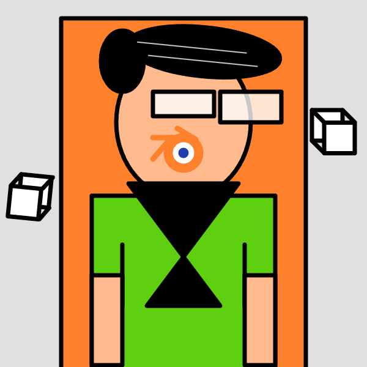

P5JS Self Portrait
P5Js Self portrait

A self portrait image created using processing and p5js to create basic shapes and colors in a way to express the defining characterisitcs of myself without the need for traditional creative drawing tools and instead relies on javascript code.
Code below: